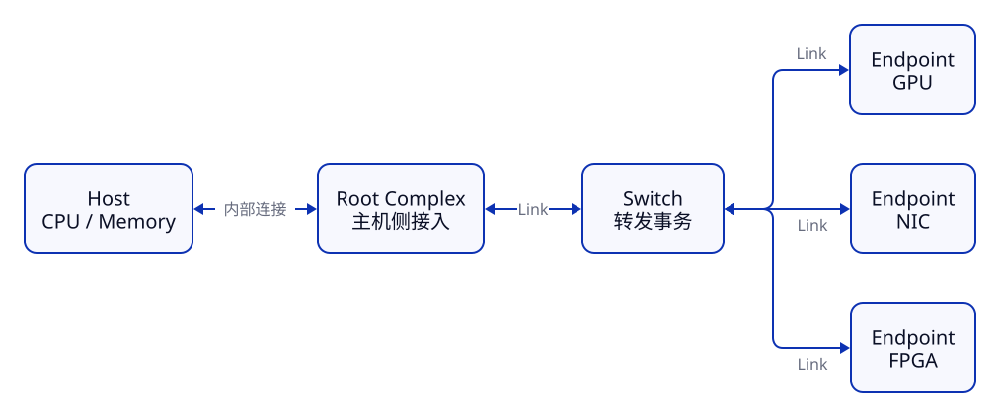
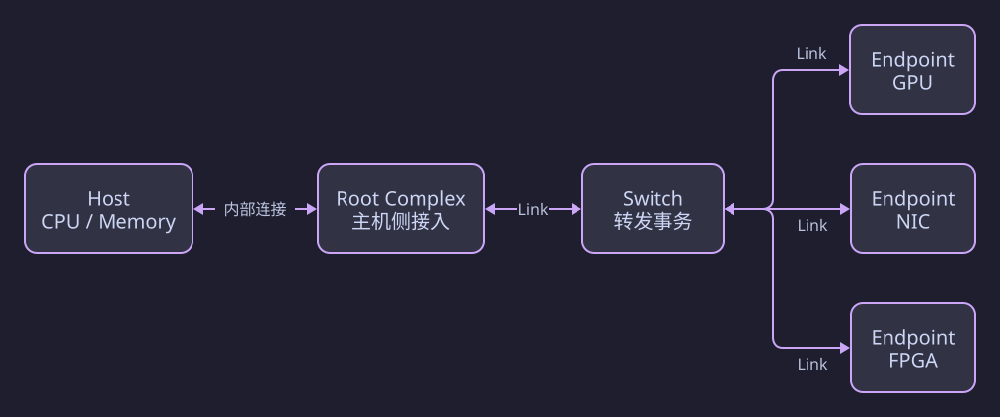
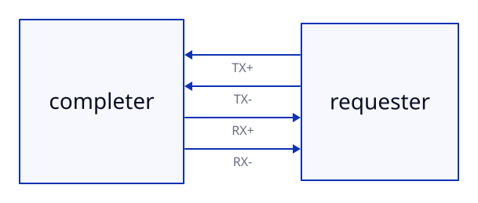
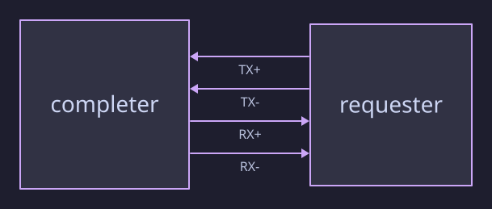
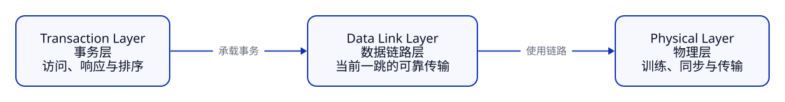
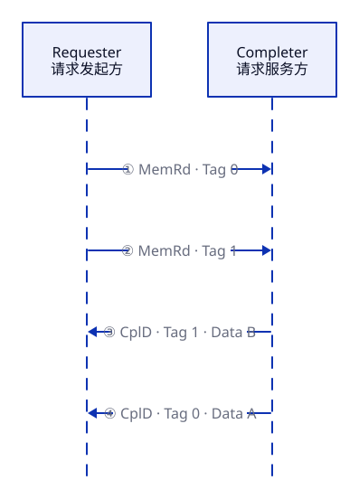
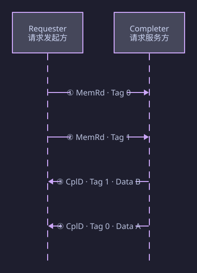
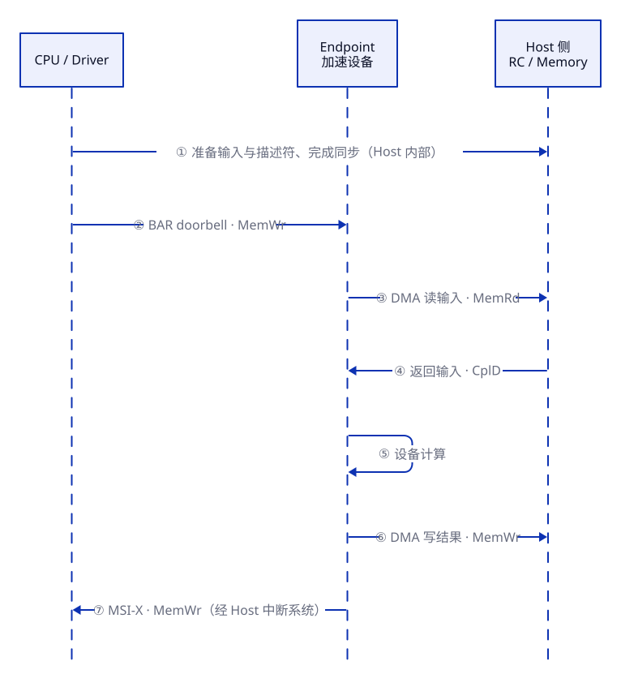
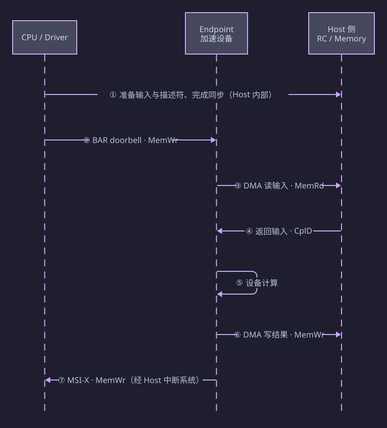

PCIe：协议与软件可见行为¶
PCIe（PCI Express）是面向高性能外设的点对点、串行、分组交换式 I/O 互连协议。 它将内存读写、配置访问等事务封装为 packet，在 Host 与设备之间传递。
本文的范围
本文建立 PCIe 的行为模型：谁发起访问、请求怎样完成、系统怎样发现与使用设备，以及吞吐为何受到限制。
图中表示的是逻辑角色和事务关系。RTL 模块划分、厂商 IP 接口、精确报文格式、设备内部数据通路和周期时序，见：
I. 整体模型：拓扑、Link 与分层¶
1.1 从共享总线到交换网络¶
传统 PCI 由多个设备共享并行总线。PCIe 则由多条独立的点对点 Link 组成，通过 Switch 扩展连接。
 
| 角色 | 作用 |
|---|---|
| Host | CPU、系统内存及运行其上的软件，是设备管理与数据处理的主机侧 |
| Root Complex（RC） | 连接 Host 的 CPU / Memory 系统与 PCIe 层次结构，通过 Root Port 接入 Link |
| Endpoint（EP） | 提供实际功能的终端设备，如 GPU、SSD、NIC、FPGA 加速卡 |
| Switch | 在多个端口之间转发 packet，扩展 PCIe 拓扑 |
| Link | 相邻两个 PCIe 端口之间的连接，可由多个 Lane 组成 |
一个 Endpoint 可以直接连接 Root Port，也可以经过 Switch 连接 Root Port。
各 Link 独立，但整条路径带宽会相互影响：多个 Endpoint 经过同一条上行 Link 时，会竞争该段带宽。
1.2 Lane 与 Link Width¶
Lane 是 PCIe 的基本全双工传输单元，两个方向可以同时传输；物理上使用一对发送差分线与一对接收差分线：
 
| Link Width | 含义 |
|---|---|
| x1 | 1 条 Lane |
| x4 | 4 条 Lane |
| x8 | 8 条 Lane |
| x16 | 16 条 Lane |
多个 Lane 共同承载同一条 Link 的数据，并进行分发和对齐。因此 x16 应理解为多条高速串行 Lane 协同工作。
Generation 决定每 Lane 的速率，Width 决定有多少 Lane。 实际工作速率与宽度取决于两端能力、平台连接及链路训练结果。
1.3 PCIe 的 Transaction, Data Link 与 Physical 三层协议¶

| 层次 | 核心问题 | 主要内容 |
|---|---|---|
| Transaction Layer，事务层 | 要访问什么资源？请求与响应怎样关联？ | TLP、读写、Completion、Tag、事务排序、流控规则 |
| Data Link Layer，数据链路层 | 怎样可靠地跨过当前这一跳 Link？ | 差错检测、确认、重传、链路管理信息 |
| Physical Layer，物理层 | 怎样建立连接并传输数据？ | Lane、速率、编码、同步、Link Training |
软件最常接触的是 Configuration、BAR、DMA 和中断，这些操作最终依托上述协议层完成。
分层与代际的边界
三层是协议职责的抽象，不代表真实硬件必须划分成三个独立模块。
下文先用 Gen1～Gen5 常见的 Non-Flit Mode 解释链路确认与流控。Gen6 引入的 Flit Mode 保留了主要事务语义，但具体链路机制有所变化，见 VI。
II. 事务：TLP、请求与 Completion¶
2.1 TLP 表达一次什么操作？¶
TLP（Transaction Layer Packet） 是事务层传递请求或响应的基本单位。可以把它理解为“操作类型、目标 / 请求标识、长度等控制信息，以及按需携带的数据”。
例如，Host 要向设备的一个控制寄存器写入 0x12345678，PCIe 上传输的是面向该地址的 Memory Write 请求及其数据。CPU 指令、AXI 信号或软件函数调用本身，并不会原样在线路上传输。
| 常见事务 / TLP | 用途 | 是否需要 Completion？ |
|---|---|---|
| Memory Read（MemRd / MRd） | 读取设备 MMIO 资源，或由设备读取 Host Memory | 需要；成功读取时返回数据 |
| Memory Write（MemWr / MWr） | 写设备 MMIO 资源，或由设备写 Host Memory | 普通 MemWr 不需要 |
| Configuration Read | 读取 Function 的身份、能力与配置 | 需要；成功读取时返回数据 |
| Configuration Write | 修改 Function 的配置 | 需要；成功写入时返回无数据的完成响应 |
| Completion（Cpl）/ Completion with Data（CplD） | 返回 Non-Posted 请求的状态，按需携带数据 | 它本身就是响应 |
| Message | 协议定义的事件与系统消息 | 按具体类型理解 |
这里只列入门常见类型。
这里有两个特别容易混淆的地方。
- 访问 I/O 设备，不等于使用 I/O Read/Write TLP。例如 CPU 访问 FPGA 的 MMIO 控制寄存器，使用的是 Memory Read/Write。
I/O Read/Write指独立的传统 I/O 地址空间，x86 的 IN/OUT 是理解这种空间的典型入口。 - Configuration Space 不是放在主机 DRAM 中的一段设备数据。它是某个 Function 对软件暴露的标准配置寄存器空间，最大 4 KiB，包含设备身份、BAR、Command、能力结构等。
- 访问它时，设备的配置请求译码逻辑响应。**
- 而访问 BAR 对应的业务寄存器时，则由相应业务地址译码逻辑**响应。
Messages 是专门表示事件或管理信息的 Message TLP。其头部包含 Message Code，告诉接收端发生了什么；还包含路由方式，决定向 Root Complex、按指定目标或以其他规定方式传送。部分消息可以带数据。
此外，“Posted 不一定就是“写操作”，Configuration Write 就需要 Completion。
2.2 Posted 与 Non-Posted¶
| 分类 | 行为 | 典型例子 |
|---|---|---|
| Posted Request | 请求发出后，不要求事务层返回 Completion | 普通 Memory Write |
| Non-Posted Request | 请求发出后，需要等待对应 Completion 才结束该事务 | Memory Read、Configuration Read / Write |
PCIe 的读取是 split transaction：请求与响应分开传输，等待响应期间可以发送其他请求，无需独占链路。
Posted 不表示访问已在目标端完成
“不需要 Completion”只描述事务层响应规则，不能据此判断写入已到达最终目标、设备任务已执行完毕，或 CPU 已经能使用结果。
需要确认设备状态时，应依照设备协议和平台规则使用状态读取、完成队列、同步操作或中断。
2.3 Requester、Completer 与 Tag¶
Requester 发起请求，Completer 服务请求并返回 Completion。它们是一次事务中的角色，并不固定对应 Host 或 Endpoint。Host 和 Endpoint 到底谁是 Requester、谁是 Completer，取决于事务的请求方向。
| 操作 | Requester | Completer |
|---|---|---|
| CPU 读取设备 BAR 资源 | Host 侧 | Endpoint |
| Endpoint DMA 读取 Host Memory | Endpoint | Host 侧 |
Outstanding Request 指已经发出、尚未完成的请求。Requester 可以连续发出多个 MemRd，并用 Requester ID + Tag 将 Completion 对应回原请求。
 
图中同一 Requester 的两个请求分别使用 Tag 0、Tag 1。
关于请求的响应，需要注意：
- 不同请求的 Completion 可以不按请求发出顺序返回，也即返回顺序不一定等于发出顺序。
- 一次 MemRd 也可能由多个 CplD 分段返回：必须收齐该请求所需的数据后，才能认为这次读取完成。图中为简化，分别用一个 CplD 表示。
尽量维持大量 Outstanding request
以 Device 发起 MemRd TLP为例，Device 发出读请求后，必须等待 Host 端处理并返回携带数据的 CplD，这次交互才算结束。这个“请求-等待-返回”的往返时间（RTT）是相当可观的。
如果 Device 采用“发一个请求 → 等待数据返回 → 再发下一个请求”的串行模式，那么在漫长的 RTT 期间，PCIe 链路将完全处于空闲等待状态，带宽利用率会极低。
Outstanding Request 机制正是为了解决这个问题而生的。它允许 Device 在未收到前一个请求的 CplD 之前，就继续发出新的请求。这样，在等待第一个请求数据返回的“漫长” RTT 内，链路上可以持续不断地传输后续的请求报文，将空闲的等待时间“填满”，从而隐藏了单个请求的延迟。
因此，其核心目的并非为了降低单个请求的“绝对延迟”，而是为了通过并行化来“掩盖”长延迟，从而最大化系统吞吐量（带宽）。
但是，Outstanding Request 也有自己的代价。它会增加单个事务的“绝对延迟”（因为请求和完成报文需要在更深的队列中排队），并且必然增加硬件面积开销（需要更大的缓冲区来存储未完成请求的 Tag 和可能乱序返回的数据）。这是一种典型的用资源换吞吐量的设计权衡。
III. 流控与可靠性：能不能发、有没有传对¶
3.1 Credit-based Flow Control¶
PCIe 通过 Credit（信用额度） 表示相邻接收端可接受多少传输，避免发送端把对端接收缓冲区塞满。
基本过程为：
- 接收端公布可用额度。
- 发送端检查当前 TLP 所需额度，足够才发送。
- 接收端处理数据、释放空间后，继续更新额度。
这允许发送端在已有授权范围内连续传输，适合反馈存在延迟的链路。额度不足时，即使链路速率很高，发送仍需暂停。Intel 流控说明
经典 Non-Flit Mode 中，额度按事务类别和 Header / Data 分开管理：
| 类别 | Header Credit | Data Credit |
|---|---|---|
| Posted | PH | PD |
| Non-Posted | NPH | NPD |
| Completion | CplH | CplD |
这里的 CplD Credit 是 Completion Data 额度，前文的 CplD TLP 是 Completion with Data 报文，需结合上下文区分。
3.2 Data Link Layer：一跳内的可靠传输¶
在经典 Non-Flit Mode 下，链路层使用 Sequence Number、LCRC、ACK / NAK 与 Replay 协调可靠传输：
| 机制 | 作用 |
|---|---|
| Sequence Number | 识别当前 Link 上的传输顺序，配合检测丢失或重复等情况 |
| LCRC（Link CRC） | 检查当前 Link 传输中的数据损坏 |
| ACK / NAK | 确认成功接收，或请求重传 |
| Replay | 发送端保留尚未确认的数据，按规则在出错或确认超时时重传 |
- ACK 可以累计确认一批 TLP；
- 发送端也可在等待 ACK 时继续发送，无需每发一个包就停下来等待。
这些机制作用于相邻端口之间；经过 Switch 时，每一跳分别处理链路可靠性。
3.3 TLP 与 DLLP¶
DLLP（Data Link Layer Packet） 用于链路管理，和承载系统事务的 TLP 不同。
| 类别 | 典型内容 | 作用范围 |
|---|---|---|
| TLP | Memory、Configuration、Completion、Message | 在事务发起者与目标之间传递，可经 Switch 转发 |
| DLLP | ACK / NAK、流控初始化与更新、部分电源管理信息 | 相邻端口之间的当前 Link |
两个容易混淆的“完成”
链路 ACK：相邻接收端已正确收到相关传输。
事务 Completion：对某次 Non-Posted 请求返回状态，按需携带数据。
IV. 软件怎样发现设备、访问设备资源？¶
4.1 Function、Configuration Space 与枚举¶
Function 是 PCIe 中可独立识别和配置的逻辑功能。一个物理设备可以提供多个 Function，每个 Function 有自己的 Configuration Space。
| 配置内容 | 用途 |
|---|---|
| Vendor ID、Device ID、Class Code | 标识厂商、设备与功能类别 |
| BAR | 描述该 Function 的可映射资源窗口 |
| Command / Status | 控制访问能力与记录状态，例如允许 Memory Space 访问、允许设备发起 DMA |
| Capabilities / Extended Capabilities | 描述 PCIe、MSI / MSI-X、电源管理、AER 等能力 |
系统启动或发现新设备时，固件 / OS 大致执行：
遍历层次结构 → 发现 Function → 读取身份与能力 → 分配地址资源 → 配置设备 → 由驱动初始化并使用。
Function 常用 BDF（Bus : Device : Function） 标识。Linux 中的 0000:03:00.0 表示：Domain 0000、Bus 03、Device 00、Function 0。
4.2 BAR：设备资源的地址窗口¶
BAR（Base Address Register）位于 Configuration Space 中，用于描述设备所需的地址资源。系统为其分配地址后，Host 可以通过对应窗口访问设备资源。
现代加速设备通常使用 Memory BAR 暴露 MMIO 资源，例如控制寄存器、状态寄存器或设备内存窗口。
通过 BAR 访问启动寄存器
假设 BAR0 对应的 PCIe 地址窗口为 0xA000_0000～0xA000_FFFF，大小为 64 KiB；启动寄存器在窗口内的偏移为 0x24。
则目标地址为：BAR0 base + offset = 0xA000_0024。
Host 通过映射后的 MMIO 窗口写入 1，PCIe 侧对应一个到达该资源的 Memory Write 请求。设备按自己的寄存器定义，将其解释为启动操作。
BAR 本身是配置寄存器，其描述的窗口才用于访问设备资源。
窗口可以对应寄存器或存储资源，并不是说其背后存在一块“PCIe 专用 RAM”。
4.3 配置访问与 MMIO 访问不要混淆¶
| 操作 | 访问对象 | PCIe 事务类型 |
|---|---|---|
| 读取设备身份、设置 BAR | Configuration Space | Configuration Read / Write |
| 写入 BAR 窗口中的启动寄存器 | 设备的 MMIO 资源 | Memory Write |
| 读取 BAR 窗口中的状态寄存器 | 设备的 MMIO 资源 | Memory Read + Completion |
因此，访问由 BAR 映射的寄存器，不是访问 BAR 配置寄存器本身。
V. DMA 与中断：怎样提交任务、搬运数据、收到通知？¶
5.1 MMIO 管理任务，DMA 搬运批量数据¶
典型设备使用两种互补的操作：
| 操作 | 谁发起主要访问？ | 常见用途 |
|---|---|---|
| Host MMIO | CPU / Host | 设置参数、写 doorbell、读取状态 |
| 设备 DMA | Endpoint | 批量读取或写入 Host Memory，减少 CPU 逐项搬运数据的负担 |
DMA（Direct Memory Access）是一种数据搬运方式，不是独立的 PCIe TLP 类型。设备 DMA 读取 Host Memory，使用 MemRd + CplD；写入 Host Memory，使用 MemWr。
Descriptor、命令队列和 doorbell 是常见的设备使用模型：描述符告诉设备“搬什么、搬多少”，doorbell 通知设备“有新工作”。其具体格式由设备 / 驱动协议定义。
doorbell
Doorbell（门铃）本质上是一种轻量级的硬件通知机制。在 PCIe 系统中，它通常是主机（Host）通过一次 PCIe 内存写（Memory Write） 操作，去“敲响”设备（Device）内部的一个特定寄存器，以此告知设备：“我这边有新任务准备好了，你快来取”。
以最常见的存储/网络设备为例，Doorbell 的交互模式通常遵循以下“生产者-消费者”模型：
- 主机准备任务：Host 上的驱动程序将新的命令（如读写请求）写入位于主机内存中的队列（Submission Queue），并更新队列的“尾指针”（Tail Pointer），表示有新的条目加入。
- 主机按响门铃（Ring Doorbell）：随后，Host 通过 PCIe 总线，向设备内部一个特定的 Doorbell 寄存器执行一次写操作，写入的值就是更新后的队列尾指针值。
- 设备响应：设备检测到 Doorbell 寄存器被写入，便知道了“有新的待处理任务”。它会主动发起 DMA（直接内存访问）读请求，从主机内存的指定队列中把具体的命令描述符（Descriptor） 取回设备内部进行处理。
在整个过程中，Doorbell 本身不传输实际数据或复杂的命令内容，它只是一个非常精简的“信号”，真正的大量数据交换是通过后续的 DMA 操作完成的。
为什么需要 Doorbell？——与轮询的对比
Doorbell 机制的核心价值在于高效的通知，这与设备端的“轮询（Polling）”模式形成鲜明对比：
- Doorbell（中断式通知）：设备在大部分时间可以处于空闲或低功耗状态，只有在 Doorbell 被敲响时才被唤醒去干活。这极大地节省了设备端的处理资源和功耗。
-
轮询（Polling）：设备需要持续不断地读取主机内存中的队列指针，以检查是否有新任务。这种方式虽然延迟可能更低，但会持续消耗设备端的计算资源和 PCIe 带宽（即使没有任务时也在读取）。
因此，Doorbell 是一种在“及时响应”和“资源节约”之间取得平衡的设计。
DMA 地址不等于用户程序指针
软件指针通常是 CPU 虚拟地址；设备发起普通 DMA 使用的是设备可见的 DMA 地址。它可能经 IOMMU 转换到实际物理内存，不能默认与 CPU 虚拟地址或物理地址相同。
驱动应使用平台 DMA API 建立映射、处理权限与同步，再将得到的 DMA 地址交给设备。Linux DMA API HOWTO
5.2 案例：一次 AI 加速器推理的数据交互¶
假设 Host 已准备好 16 MB 输入 Tensor，设备采用“DMA 取输入 → 计算 → DMA 写结果 → 中断通知”的方式工作。
 
图中时间自上而下，箭头表示逻辑先后，不按实际延迟比例绘制。
- 准备：Host 准备输入和描述符，驱动建立 DMA 映射，并按平台要求使数据对设备可见。
- 提交：Host 通过 BAR 窗口写 doorbell，通知设备开始工作。
- 请求输入：Endpoint 发出一批 MemRd（这里可能包含多个 Outstanding request）；设备也可能先通过 DMA 读取描述符，图中省略。
- 接收输入：Host 侧用 CplD 返回输入数据，设备收齐所需数据。
- 计算：设备使用输入执行推理，这一阶段的设备内部访存不必经过 PCIe。
- 回传：Endpoint 用一批 MemWr 将结果写入 Host 输出缓冲区。
- 通知与使用：设备按完成与排序约定报告完成，例如发送 MSI-X；驱动处理完成状态并执行所需同步后，软件使用结果。
H2D / D2H 用于描述数据方向
H2D（Host to Device）：含义是数据从 Host 到 Device。在上述模型中，请求由设备主动发起，通过 MemRd 取得 CplD 数据。
D2H（Device to Host）：含义是数据从 Device 到 Host。上述模型通过设备发起 MemWr 完成。
数据方向与请求发起方向是两个概念。Host 主动向设备窗口写数据也是 H2D 的另一种实现方式。
5.3 MSI / MSI-X：用写事务传递中断¶
MSI（Message Signaled Interrupt） 和 MSI-X 是 PCIe 总线上的带内中断（In-band Interrupt）机制。它们与 DMA 的关系是协同工作而非强制绑定；同时，PCIe 规范推荐并大多要求使用 MSI/MSI-X，但并非强制绑定到 DMA 传输上。
- 与传统 INTx 中断的区别：传统 PCI 中断使用独立的物理引脚（带外） 来发送信号，多个设备通常共享同一根中断线，需要软件轮询来确认是哪个设备触发了中断。MSI/MSI-X 则完全摒弃了物理引脚，改为通过在 PCIe 总线上发起一次内存写操作（Memory Write TLP） 来“告知”CPU。这次写操作的目标地址和写入的数据（即中断向量）由系统预先配置好，CPU 端的根复合体（Root Complex） 会捕获这个写操作，并将其翻译成对 CPU 的中断请求。
这种方式带来了几个根本性优势：
- 独占性：每个 MSI 向量在系统中是唯一的，设备不再需要与别人共享中断，中断处理程序也无需再检查“这个中断是不是我的”。
- 数量多：一个设备可以申请多个中断向量，用于区分不同的任务状态（如“DMA 完成”“错误”“队列半满”等），使驱动程序设计更清晰。
- 消除 DMA/IRQ 竞争：这是 MSI 最关键的硬件保证。当设备通过 MSI 发出中断时，可以确保它之前发起的 DMA 写操作对于 CPU 来说已经可见。这避免了“数据还没完全写入内存，中断就已经到达 CPU”的竞争条件，简化了驱动程序的同步逻辑。
MSI-X 是 MSI 的增强版，解决了 MSI 在实际部署中的若干限制。
| 特性 | MSI | MSI-X |
|---|---|---|
| 最大向量数 | 32 个（且必须是 2 的幂） | 2048 个（任意数量） |
| 地址与数据 | 所有向量共享同一个目标地址和基础数据，通过数据字段的偏移来区分向量 | 每个向量拥有独立的目标地址和数据，可灵活映射到不同的 CPU 或中断控制器 |
| 向量分配 | 必须申请一个连续的向量块 | 每个向量可独立配置，无需连续，软件分配更灵活 |
| 屏蔽粒度 | 通常以整个设备为单位进行屏蔽 | 支持按单个消息/向量进行屏蔽，便于精细化管理 |
| 硬件实现 | 相对简单，只需实现一个基础的 MSI Capability 结构 | 需要在设备内部实现一张查找表（MSI-X Table） 和待处理位图（PBA），稍复杂 |
MSI-X 在线上同样使用 MemWr，但设备为不同中断项维护一张 MSI-X Table。每项 16 B，包含：
| 字段 | 大小 | 含义 |
|---|---|---|
| Message Address Low | 32 bit | 中断地址低半部分 |
| Message Address High | 32 bit | 中断地址高半部分 |
| Message Data | 32 bit | 中断消息数据 |
| Vector Control | 32 bit | 包括该项屏蔽状态 |
这张表通过设备 BAR 空间暴露给主机，硬件可以用寄存器或 RAM 实现。此外还有 PBA，Pending Bit Array，用位数组记录被屏蔽等情况下的待处理中断状态。Altera MSI-X Table 与 PBA
由于 MSI-X 的灵活性，它在现代高性能 PCIe 设备（如 NVMe SSD、高速网卡、FPGA 加速卡）中已成为事实上的标准。例如，Xilinx 的 QDMA 驱动就强制要求使用 MSI-X 中断。
VI. 链路：建立连接与代际演进¶
6.1 Link Training 与 LTSSM¶
连接建立后，双方需要检测对端、完成同步，并协商可用的 Link Width 与速率等参数。这一过程由 LTSSM（Link Training and Status State Machine） 管理。
初次建立连接的简化路径为：
Detect → Polling → Configuration → L0。
| 状态 / 类别 | 入门理解 |
|---|---|
| Detect | 检测对端是否存在 |
| Polling / Configuration | 完成训练、识别和链路参数配置 |
| L0 | 正常工作的活动状态 |
| Recovery | 恢复 / 重新训练，也用于部分速率切换过程 |
| L0s / L1 等 | 链路电源管理相关状态 |
| Disabled、Hot Reset、Loopback 等 | 禁用、复位或测试相关状态 |
这不是完整状态图；高速训练可能还会经过 Recovery。Link 已进入工作状态，也不代表设备已被 OS 枚举或驱动已初始化完成。
6.2 速率、编码与带宽¶
| 代际 | 每 Lane 标称速率 | 主要传输方式 |
|---|---|---|
| Gen1 | 2.5 GT/s | NRZ、8b/10b |
| Gen2 | 5 GT/s | NRZ、8b/10b |
| Gen3 | 8 GT/s | NRZ、128b/130b |
| Gen4 | 16 GT/s | NRZ、128b/130b |
| Gen5 | 32 GT/s | NRZ、128b/130b |
| Gen6 | 64 GT/s | PAM4、Flit Mode、FEC |
| Gen7 | 128 GT/s | PAM4、Flit Mode、FEC |
Gen1～Gen5 的速率与编码可参见 Intel PCIe 支持说明；Gen6 / Gen7 的 PAM4 与 Flit Mode 见 PCI-SIG 代际说明。
GT/s 不是应用有效 GB/s。计算带宽时，要区分编码开销、协议开销、单向与双向，以及实际协商的 Lane 数。
对于 Gen1～Gen5，可先估算单向、仅扣除线路编码开销后的容量：
其中 \(R_{\text{lane}}\) 在这些 NRZ 代际可按 bit/s 计；\(\eta\) 对 Gen1 / 2 为 \(8/10\)，对 Gen3～Gen5 为 \(128/130\)。
两个带宽数量级
Gen1 x1 单向：\(2.5 \times 8/10 / 8 = 0.25\ \mathrm{GB/s}\)，即 250 MB/s。
Gen5 x16 单向：\(32 \times 16 \times 128/130 / 8 \approx 63.0\ \mathrm{GB/s}\)。
两者都还没有扣除 TLP、链路管理等协议开销；实际 DMA 有效吞吐会更低。这里 MB / GB 均采用十进制单位。
全双工可以同时进行双向传输，但双向合计带宽不能用于估算一次单向拷贝的耗时。
6.3 Gen6：PAM4、Flit 与 FEC¶
Gen6 在 64 GT/s 工作时使用 PAM4：四个电平表示 2 bit / symbol，相比二电平 NRZ 提高每符号承载的信息量，同时对噪声更敏感。
相应地引入：
| 概念 | 作用 |
|---|---|
| Flit（Flow Control Unit） | 用固定 256 B 单元组织传输，承载事务和链路管理信息 |
| FEC（Forward Error Correction） | 前向纠错，减少部分错误触发重传的需要 |
| CRC 与 Replay | 检测剩余错误，并按协议重传 |
Gen7 延续了 256 B Flit、PAM4 与相关纠错机制。PCI-SIG Flit / FEC 说明、PCIe 7.0 Q&A
Flit mode 中，MemRd / MemWr、Configuration、BAR、DMA 等上层认知仍然适用，但逐 TLP 的 LCRC、ACK / NAK 及独立 DLLP 图景，不能原样用于解释 Flit Mode。
讨论具体链路机制时，要同时说明代际、实际速率和工作模式。
VII. 性能：链路很宽，为什么 DMA 仍然很慢？¶
7.1 并发读取隐藏往返延迟¶
MemRd 需要等待 Completion。若一次只允许一个请求未完成，那么吞吐受到“每次请求的数据量 / 往返完成时间”限制。
设平均每请求读取 \(S\) 字节、平均完成延迟为 \(L\)、可维持 \(N\) 个 outstanding requests，则理想化估算为：
其中 \(B_{\text{path}}\) 是整条数据路径能提供的有效吞吐上限。该模型用于理解并发需求，不是任何配置下的实测公式。
并发请求的带宽估算
假设每请求读 256 B，平均完成延迟 1 µs，并且请求可以充分重叠：
- 1 个 outstanding：\(256\ \mathrm{B}/1\ \mathrm{\mu s}=256\ \mathrm{MB/s}\)。
- 128 个 outstanding：\(128\times256\ \mathrm{B}/1\ \mathrm{\mu s}\approx32.8\ \mathrm{GB/s}\)。
后者只是并发窗口允许的估算值，实际还受链路有效带宽、Host Memory、额度等限制。1 µs 是示例假设，不是 PCIe 固定延迟。
反过来，若目标吞吐为 \(B\)，需要维持的大致在途数据量为 \(B L\)，请求数约需满足 \(N \gtrsim B L/S\)。这与 Memory-Level Parallelism 的思想一致。
7.2 常见限制项¶
| 限制项 | 影响 |
|---|---|
| 实际 Generation / Width | 决定 Link 的基本传输容量，降速或降宽会降低上限 |
| Tag / Outstanding 数量 | 限制可同时等待的读请求数 |
| MRRS（Max Read Request Size） | 限制一次 MemRd 可以请求多少数据 |
| MPS（Max Payload Size） | 限制携带数据的 TLP 的有效载荷大小，影响分包及协议开销 |
| Credit 与接收能力 | 对端空间或处理速度不足时，发送必须等待 |
| Host Memory、设备处理速度与共享路径 | 整体吞吐取决于最慢环节；Switch 上行链路也可能成为瓶颈 |
| 传输粒度与软件开销 | 小传输中，映射、提交、同步和通知开销更难摊薄 |
MRRS 与 MPS 约束的对象不同：一个 512 B 读请求可能由多个 CplD 返回，不要求每个 CplD 都装下 512 B。参数含义可参见 Intel PCIe 配置字段说明。
7.3 加速器的端到端时间¶
在数据搬运与计算串行执行、暂不计提交及同步开销的模型中：
因此，仅缩短计算时间并不一定显著降低总时间。常见方向包括：
- 减少搬运量：让数据驻留设备，复用已传输的数据，减少中间结果回传。
- 摊薄固定开销：合并小任务或小传输，提高有效传输粒度。
- 维持并发请求：避免读取期间链路闲置。
- 重叠通信与计算：在依赖与资源允许时，计算当前 tile 的同时传输下一 tile。
理想流水化下，稳态吞吐由最慢阶段主导；单次任务仍有启动、依赖和流水线填充 / 排空成本，不能直接将所有延迟都替换成三个阶段的最大值。
VIII. PCIe 与 AXI, 缓存一致性和 CXL¶
8.1 与 AXI 对照理解¶
| 维度 | AXI 的常见模型 | PCIe 的常见模型 |
|---|---|---|
| 适用范围 | 芯片内部互连 | 芯片间 / 板级高速 I/O |
| 事务表达 | 地址、数据、响应通过独立 channel 传递 | 请求与 Completion 封装为 TLP |
| 流控 | channel 上的 VALID / READY 握手 | 依据接收端 Credit 发送 |
| 并发关联 | ID 与各 channel 的排序规则 | Requester ID、Tag 与事务排序规则 |
| 寻址与发现 | 通常依据 SoC 地址映射 | 枚举、配置资源，并通过地址 / 标识等路由事务 |
| 连接形态 | 常见为片上互连网络 | 点对点 Link 组成的交换网络 |
8.2 DMA 正确性：地址、可见性与顺序¶
普通 PCIe 并不自动使设备缓存成为 CPU 缓存一致性域的一部分。 某些平台支持 coherent DMA，另一些需要显式 cache maintenance，应由平台与 DMA API 的约定决定。
| 问题 | 需要保证什么？ |
|---|---|
| 地址映射与权限 | 设备得到有效且被授权的 DMA 地址，IOMMU 可参与转换和隔离 |
| 数据可见性 | CPU 与设备在取得缓冲区使用权时，能看到正确版本的数据 |
| 访问顺序 | 输入、描述符和完成状态按约定对另一侧可见 |
8.3 PCIe 与 CXL¶
CXL 复用 PCIe 物理接口及相关基础设施，并通过 CXL.cache、CXL.mem 等提供缓存一致性与设备内存访问语义；CXL.io 保留 PCIe 风格的 I/O 与管理用途。CXL 设备与协议说明
IX. 快速回顾¶
| 回顾问题 | 核心答案 |
|---|---|
| PCIe 怎样连接设备？ | RC、Switch 与 Endpoint 通过点对点 Link 组成交换网络；每条 Link 含一个或多个 Lane |
| 事务怎样表示？ | TLP 表示 Memory、Configuration、Completion 等事务 |
| 读与普通写有什么差别？ | MemRd 等待 Completion；普通 MemWr 是 Posted，不返回事务 Completion |
| 多个读怎样并发？ | 使用不同 Tag，按 Requester ID + Tag 匹配返回；一次请求可对应多个 CplD |
| 怎样避免接收端溢出？ | 发送前检查相邻接收端的 Credit |
| ACK 能证明什么？ | 证明当前这一跳的接收，不能证明设备任务完成 |
| 软件怎样访问设备资源？ | 先枚举与配置，再通过映射的 BAR 窗口进行 MMIO |
| DMA 与中断怎样传输？ | DMA 复用 MemRd / MemWr，MSI / MSI-X 也使用 MemWr |
| 为什么有带宽仍然读得慢？ | 在途请求不足时，吞吐受 \(N S/L\) 限制；还需考虑额度与整条路径 |